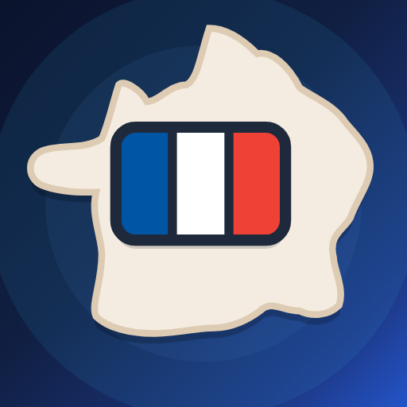
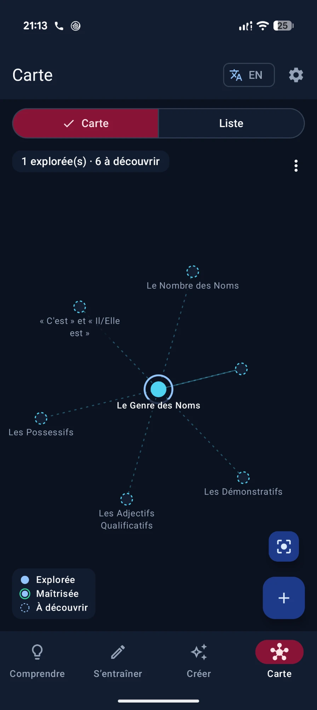

French Grammar Quest
French grammar, one rule at a time. Understand a rule, practise it until it sticks, have Gemini write a text around it, and watch a map of what you've covered grow as you go.

Why it exists
It grew out of a running study project: a grammar reference built up over months of B1–B2 work. As a document it did its job, but a document only gets scrolled. I wanted the reference to push back: show me how a rule is built, make me produce it, and remember which rules I've actually worked through.
The interface is in French on purpose, because reading the explanations in French is part of the practice. When an explanation doesn't land, an EN button in the top bar switches the interface and the rule explanations to English, and one more tap switches back. Every launch starts in French again.
One loop, four tabs
The first launch asks one question: start by understanding, or by practising? The answer decides which tab the app opens on, and it can be changed later in Settings. Everything else is one tap away in the bottom bar, and each tab keeps its place when you switch.
ComprendreLearn
The rule, its structure, examples by register, and a text to listen to.
S'entraînerPractice
Type the right form, or find the wrong word in a sentence.
CréerCreate
A fresh text or two-voice podcast built around the rule.
CarteMap
Every rule you've covered, and the ones they lead to.
What it does
A rule you can see
Each rule opens on a short summary and its trigger phrase ("Il faut que" calls the subjunctive), plus the rule it's best learned against, like the passé composé next to the imparfait. Collapsible sections then break it down: a sentence formula where each block explains its role, a yes/no decision path, examples across four registers from familier to soutenu, and an annotated passage read aloud by the phone's French voice.
Drills that are strict on French, not on typing
The checker ignores what a learner shouldn't lose points for: capital letters, curly or straight apostrophes, extra spaces, a final full stop. Accents stay significant, since they're part of the spelling, but an answer that's only wrong on accents gets its own "check the accents" message. Accent keys insert at the cursor, and autocorrect stays off so the keyboard can't "fix" a conjugation.
A session that ends somewhere useful
The summary lists every mistake next to the expected answer, with a button that replays only the missed items. From there it's one tap to start over, reread the rule, or move on to the next one. The best score for each rule is kept, and 70% or more marks the rule as mastered on the map.
Texts written around a rule
Pick a rule, a CEFR level and a theme, and Gemini writes about a page of French that uses the rule naturally, followed by notes on where it appears. The podcast format writes a two-voice dialogue instead, which Gemini's text-to-speech turns into audio with two distinct voices, ready to save to Downloads. Results can be listened to, saved, copied, shared or regenerated.
Your own API key
As in FitApp, nothing is baked into the build. The Gemini key is pasted once in Settings, stays on the device, and only goes to Google's own endpoint. Without a key, the Create tab says so and points to Settings instead of failing on the first try.
Nothing lost on a tab switch
The drill session, the selected rules, the level filter and the Create form all live in the ViewModel, so rotating the phone or checking the map mid-exercise doesn't reset anything. The last rule and drill type also survive a restart.
The grammar map
The map borrows its idea from WikiLinks: every rule you open lands on the map, and the rules it links to appear around it as dashed nodes you haven't opened yet. Following those links is one way to explore; the + button is the other. It opens any rule, including ones no link leads to, lists the rules not on the map first, and suggests a few at your current level.
It started as a web prototype drawn with d3. For the app, I drew it natively on a Compose Canvas instead of embedding that page in a WebView: no bundled JavaScript to keep working offline, no bridge carrying the app's state between two worlds, and one theme and language system instead of two. The layout is a small force-directed simulation in Kotlin that runs off the main thread, and node positions are saved so the map keeps its shape between visits. Pinch to zoom, tap a node for its details, and long-press to drag it somewhere else.
Where the links come from
Cross-references carried over from the prototype's lesson data, the contrast pairs each rule already declares, and a chain through the explored rules of each family. Unopened rules from the same family appear only around the rule in focus, six at most, so a large family doesn't turn the map into a hairball.
What the canvas costs
A drawn map is invisible to TalkBack, so the Map tab has a List view with the same rules as a searchable index, and the canvas itself announces how many rules are explored and how many are left. Long titles are shortened to the part before the colon, and a label that would overlap another stays hidden until you zoom in.
From an AI Studio prototype to a real app
The first version came out of Google AI Studio: a working Compose app, but with several rounds of ideas stacked on top of each other. A quest map, quizzes with hearts and XP, a timed speed drill and a mistakes screen were all still in the code, yet none of them could be reached from the interface anymore. The rework removed close to 4,000 lines of them, and the four database tables behind them went through an explicit Room migration, so saved progress and creations survive the update.
The rest was about making the app predictable: one navigation graph with a proper back stack, state that lives in the ViewModel instead of in individual screens, the same rule picker on every tab, and every string moved into French and English resource files. It joins Show Tracker and the Subscription Tracker rebuild as the third app written natively in Kotlin.